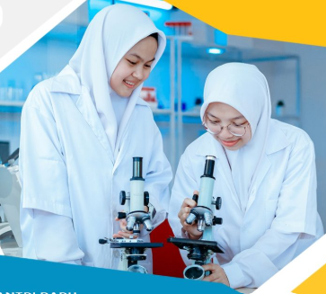

Pendidikan nasional dan pesantren, didukung tenaga pendidik yang profesional.
| Jurusan | Kuota Siswa |
|---|---|
| IPA | 90 |
| IPS | 35 |

Fokus pada penguasaan sains eksperimental, analitis, serta penalaran kuantitatif terintegrasi nilai Islam.
Mempersiapkan siswa memahami dinamika sosial, ekonomi, kepemimpinan publik, dan wawasan kebangsaan global.
Pengayaan kompetensi akademik dan keterampilan siswa di luar kurikulum reguler.